黑群晖使用DNSPod设置外网访问
黑群晖使用DNSPod设置外网访问
我折腾群辉的 DDNS 已经很久了，之前使用的是花生壳，虽然能用，但是我觉得并不好用，所以使用了腾讯云的 DSNPod 做 DDNS
步骤1: 注册域名
登录 DNSPod 管理控制台，进行购买
完成购买后，即可进入 我的域名 管理页面查看您注册的域名。
步骤2：启用 DDNS
在 “我的域名” 管理页面，单击您已注册的域名，即可进入【记录管理】页面。
单击【添加记录】，添加一条主机记录为 @，记录值为 0.0.0.0 的 A 记录。如下图所示：
注意：记录值可以填写为任意IP地址，完成操作步骤后将会自动更新为您的公网IP地址。此处以 0.0.0.0记录值为例。
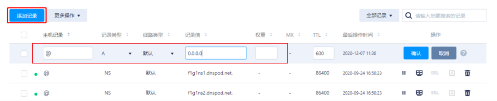- 进入 密钥管理 页面，单击【创建密钥】，输入自定义的密钥名称后并单击【确定】。如下图所示：
- 请妥善保管对话框中的 ID 与 Token。如下图所示：
- 请使用具有管理员权限的账号登录您的群晖（Synology） NAS，依次单击【控制面板】>【外部访问】。如下图所示
- 在【DDNS】页签中，单击【新增】。如下图所示：
- 在弹出的对话框中的【服务供应商】选单内下拉选择【DNSPod.cn】,并填写相关信息。如下图所示：
- 主机名称：填写您购买的域名。
- 用户名/电子邮箱：填写您获取到的DNSPod ID。
- 密码/密钥：填写您获取到的密钥。
注意：您可单击【测试联机】，测试是否能成功联机。状态栏显示为正常，即代表成功联机。
单击【确定】。
单击【立即更新】，确认状态栏显示正常。如下图所示：
- 返回 我的域名 管理页面，查看记录值的是否已变更为您的公网 IP 地址，已变更为设置成功。未变更，请进行相关排查。
完成以上步骤，我们的DDNS就搭建好啦！
步骤3：配置外网访问
一般家庭网络，公网ip都是禁用80端口和443端口的，所以要想配置外网访问，只能修改端口
1.打开群辉的设置，选择【网络】，然后选择【DSM设置】，设置 http 端口和 https 端口
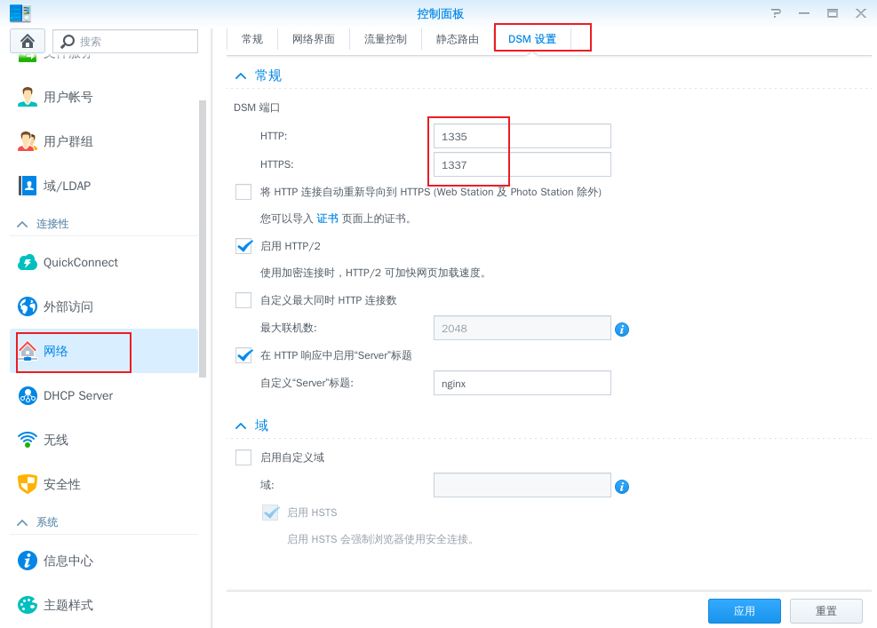2.配置路由器端口转发
我用的是小米路由器，在【高级设置】中【端口转发】，将内网的要转发的端口转发出去
比如我这里的设置的就是：当从公网访问 1337 端口后，会转发到内网的 1337 端口上
注意：这里我只配置了 https 的端口，因为我绑定了证书，可以使用 https 访问，更加安全；如果没有https，可以使用http
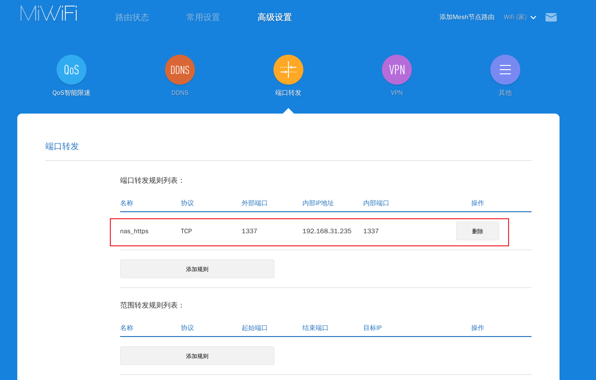3.这样，你就可以通过公网访问了。
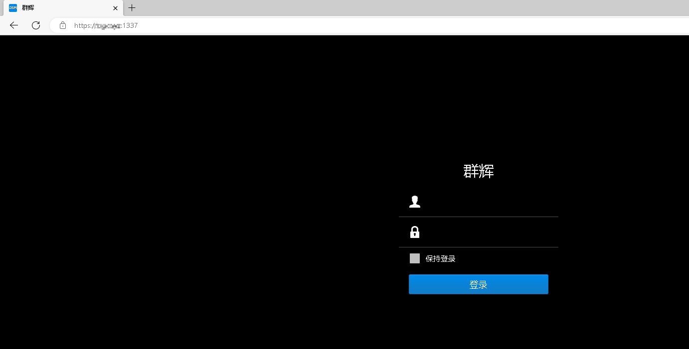步骤4：配置https安全访问
要想配置 https 访问，首先必须要有 证书，证书可以直接取 DNSPod 控制台免费申请，一个账号可以免费申请 20本 证书，足够用了
这里的步骤，简单的描述就是：
- 申请证书
- 把证书导入到群辉
- 将证书设置为默认证书
- 搞定
具体的步骤可以直接参考DNSPod的官方文档：群晖（Synology）NAS 安装免费 SSL 证书
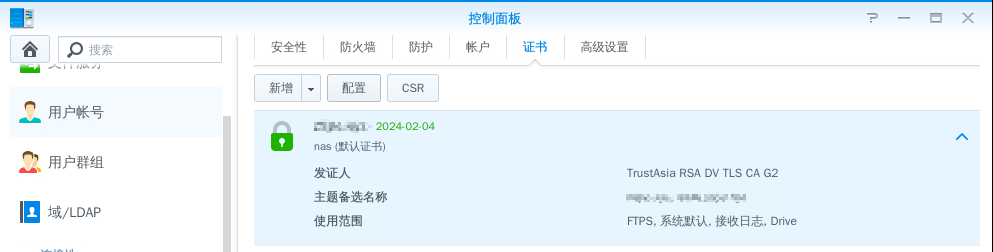至此，HTTPS 安全访问就可以了，也就意味着，你可以通过公网，使用https访问你的群辉了。
注意在路由器中，将你的 https 服务对应的端口号转发出去哦
步骤5：配置其他服务的HTTPS访问
经过上面的配置，我们的群辉已经可以通过外网安全访问了。
使用我们的域名：xxxx.xxx
使用我们配置的https的端口：1337
就可以在外网通过 xxxx.xxx:1337 愉快的访问群辉了。
下面我们来看看：在群辉中，我有一个内网服务，怎么把这个内网服务映射到外网中。
我以 firefox 为例子；配置一个可以外网访问的 firefox 浏览器，可以在外网访问家里内网的各种服务
通过域名：firefox.xxxx.xxx:1337 访问内网的firefox浏览器，就像下面这样：
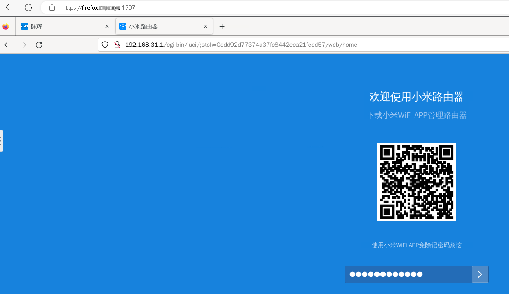在 docker 中安装 firefox
在 docker 中搜索 firefox，并安装：
docker 镜像：https://registry.hub.docker.com/r/jlesage/firefox/
github网站：GitHub - jlesage/docker-firefox: Docker container for Firefox
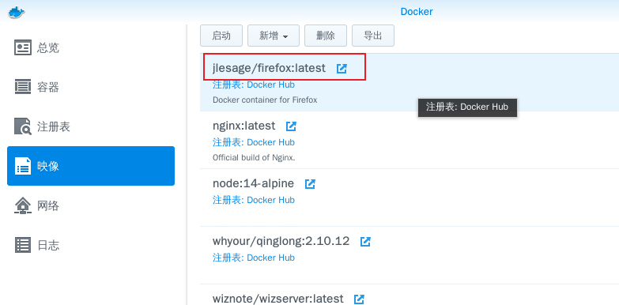安装教程和相关文档，作者已经说得很清楚了。我这里再简单的描述一下
本地新建一个文件夹：/docker/firefo/data
然后配置docker
端口配置：
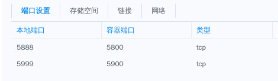存储空间配置：
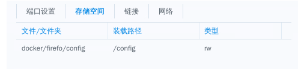环境变量配置：
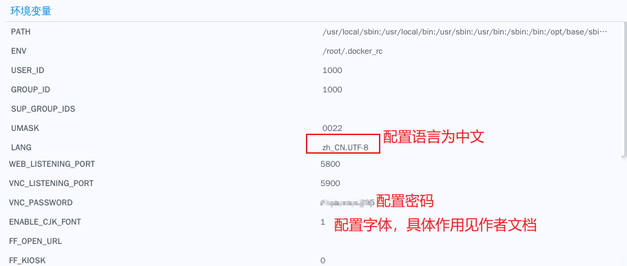然后启动docker
因为字体包比较大， 所以启动的时间会比较慢，等，，我等了15分钟左右
启动之后，在本地就可以通过 192.168.x.x:5888 端口访问 firefox 了；
配置外网访问
因为上面我们对群辉配置了 https 安全访问，所以 firefox 也要设置https安全访问
通过作者的文档可以看到，firefox是支持https访问的
只需要将配置项：SECURE_CONNECTION 设置为 1 就可以了
设置为 1 之后，会自动生成 证书文件， 放在 config/certs 文件夹下面
但是呢
上面的方法，我亲身验证，其实并不需要这么做。 所以我们不需要设置：SECURE_CONNECTION ，让它保持默认值 0 就可以啦。
那怎么配置呢？
打开群辉，【设置】【Synology应用程序门户】【反向代理服务器】【新增】一个反向代理配置
配置入图
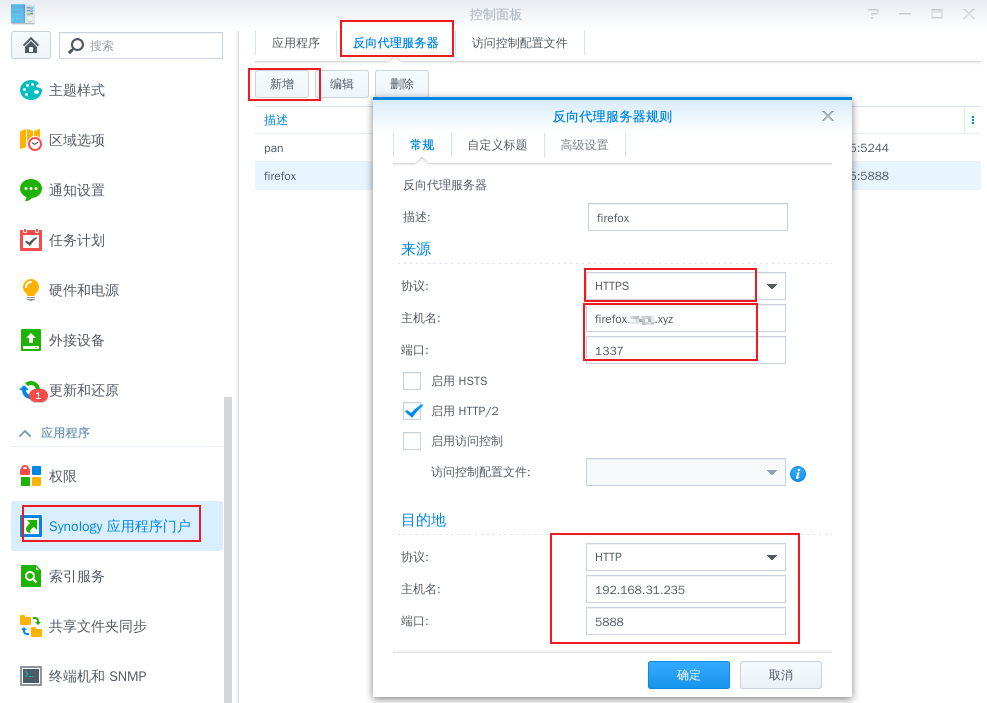到这里，群辉的配置就结束了。
但是别忘了，要想使用 https 安全的访问firefox还需要什么？ 对头，还需要证书！
所以我们要为我们的二级域名，也就是 ：firefox.xxxx.xxx 去单独申请一个证书。
申请二级域名证书
在 “我的域名” 管理页面，单击您已注册的域名，即可进入【记录管理】页面。
单击【添加记录】，添加一条主机记录为 firefox，记录值为 xxxx.xxx(这里是指你的域名) 的 CNAME 解析记录。如下图所示：
然后在这个记录后面，去申请 SSL 证书，申请方法和上面讲的一样，这里不再赘述；
证书申请下来之后
按照DNSPod的官方文档：群晖（Synology）NAS 安装免费 SSL 证书，导入到群辉中，注意，只是导入进来， 不需要任何配置
也就是说，步骤是：
- 申请证书
- 把证书导入到群辉
将证书设置为默认证书（这一步可千万不要做如果你做了，就在改回来，）- 搞定
搞定之后，我们来到群辉中，打开【设置】【安全性】【证书】在进行接下来的配置
按照图片上的内容，进行如下的配置
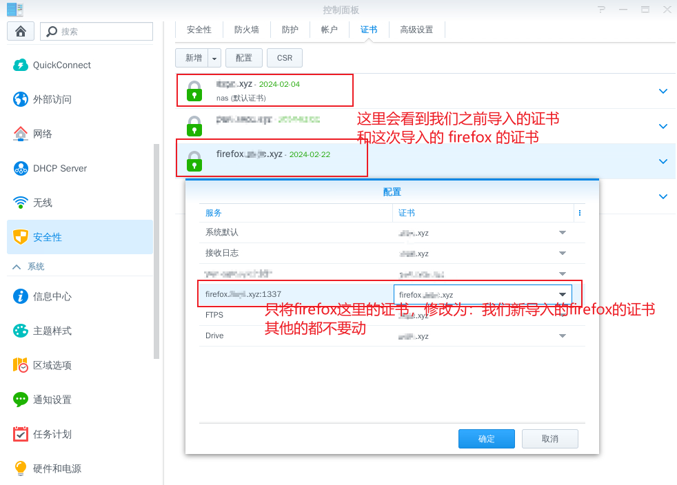等你配置完之后，就完结撒花了。
在浏览器中，就可以通过 https://firefox.xxx.xx:1337 访问你的firefox火狐浏览器啦。
举一反三：其他任何的内网服务，都可以通过这样的步骤，暴露到公网中。
所以，每一个二级域名，都要单独申请一本证书，还是挺麻烦的。